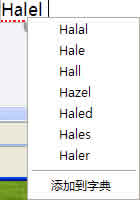
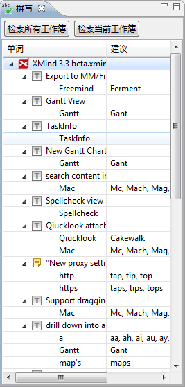
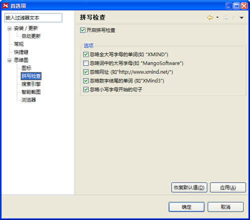

XMIND的拼写检查会在您输入主题内容的时候自动工作。拼写错误的单词的底部会出现红色的下划线。选中有错误的单词，打开鼠标右键，您可以看见被推荐的正确拼写，或者添加这个单词至您的字典。

同时XMind还提供了一个专门的拼写检查视图，这里可以检查所有打开的xmind文件中的拼写状况，检查结果以树状图的形式显示出来，并且提供了修改建议。当然，您也可以仅仅检查当前选择的xmind文件。 
按照下列步骤您可以对您的拼写检查进行更多的设置：
- 在菜单栏选择“窗口 > 首选项”；
- 选择“拼写”；
-
您可以进行下列设置：
- 开启拼写检查；
- 忽略全大写字母的单词，如 “XMIND”；
- 忽略词中的大写字母，如“MangoSoftware”；
- 忽略网址，如 “http://www.xmind.org/”；
- 忽略数字结尾的单词，如“xmind2008”；
- 忽略句首的小写字母。

注意： 备注中暂时不支持拼写检查。
您可能还对下列内容感兴趣……